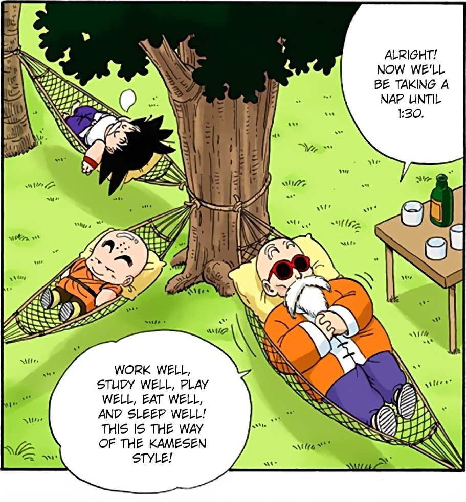
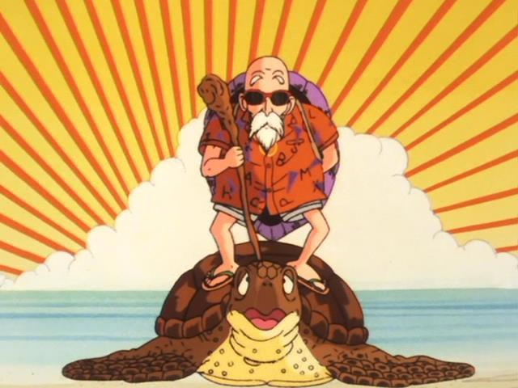
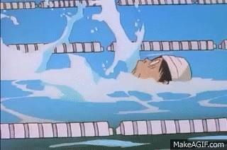

About Me
After spending years searching for meaning in every detail and logic behind every occurrence, diving into the pages of philosophical works by Seneca, Nietzsche, Epictetus, and delving into psychological insights from Dostoevsky, I realized the answer wasn't found in intricate philosophies, but in one of the first cartoons I watched or anyone watched in their life, Dragon Ball.
Work well, Study well, Play well, Eat well, Rest wellAnd you see that's the Turtle Master Roshi's way, Which struck a chord with me and became a serious mantra in my life.
This made me Learn stuff and Make stuff, that is all I do as the most exciting thing anyone can do is show the ropes of how they did what they did with the knowledge gained. I go out to learn stuff which fascinates me, I ask doubts to everyone on the field even if it's an offline or online reddit community. When I feel like I learned something on one field I do something on that field and move onto the next. So it's always learning something and making something for me. There are a lot of resources in this world that make you gain knowledge, so out of interest what catches my eye I learn through the different of source formats such as from blog posts to videos to podcasts to some random comment on online community platforms explaining how it's done.
With study and work behind me, 'playing well' means indulging in non-technical activities like hobbies. I find joy in what some might consider mundane; I transform ordinary activities into sources of fun. I do most of the boring things as fun which other people see it as boring, I immerse myself in reading novels, especially sci-fi, although I explore various genres. Delving into the histories of different heroes also captivates me. Additionally, I enjoy watching movies and TV shows, and I even write reviews on my Letterboxd account. For physical activity, swimming and biking help keep my mind sharp."
As of everyone have been in love with their rest as I am too. sleep, rest are the most human thing everyone do in their life without any motivation or reading philosopies. There is no understanding or finding meaning in sleep, it's just sleep. On another hand Eating the right food keeps you health and that's what I do and maybe you should too.
it's just sleep. On another hand Eating the right food keeps you health and that's what I do and maybe you should too.
That's all about me and these stuff are the basic routine of my life.